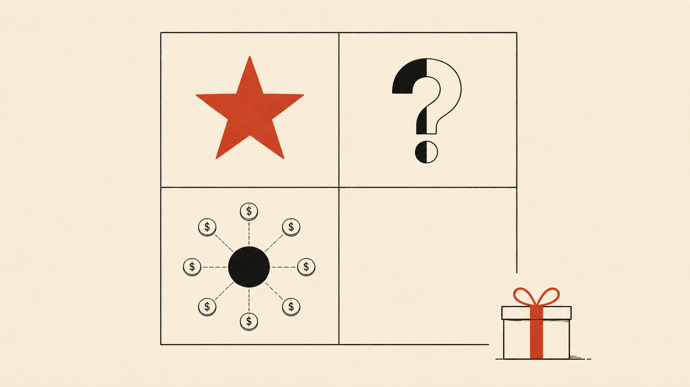

Sociabble Earns Its 4.7. The Interesting Question Is What Gets Sold Next.
A feature-portfolio teardown: where the platform's strength is anchored, how each feature currently goes to market, and what a simulated buyer journey reveals about the road ahead.

- Sociabble's 4.7 on G2 is genuinely earned - the first product in this series where the gap between promise and delivery is hard to find.
- The portfolio has one Star (the AI layer), one Cash Cow (internal comms core), and one feature - advocacy - that is strong in one market and contested in another.
- Sociabble's own demand generation runs on the product it sells: every sales asset is also a live demo. Few B2B companies have that loop.
- The three moves that matter are packaging and enablement decisions, not product changes - a discovery question, a Rewards repackaging, a demo redesign.
The portfolio/Three features/Buyer journey/GTM as demo/The transition
Most of the products in this teardown series show a measurable gap between what the marketing promises and what the reviews report. Sociabble is the first where that gap is hard to find. A 4.7 on G2 across 403 reviews, with CSMs named individually and implementation teams described as extensions of customers' own teams, is not a score you can buy with review campaigns. It reflects an operating discipline: a bootstrapped, profitable French SaaS company, founded in Paris in 2014, that grew to serve AXA, Coca-Cola CCEP, Vinci Energies, Allianz, Primark, and EDF across 180 countries without burning venture capital to get there.
So this teardown asks a different question than the others. Not "where does the promise break down" but "when a platform covers this much ground - internal communications, intranet, knowledge management, advocacy, rewards - which features carry the momentum, which carry the renewals, and how does each one actually get taken to market?"
The portfolio, mapped
Place the platform's feature clusters on a two-axis map of market growth rate against current competitive strength, and a clear structure appears.
Rewards sits outside the grid on purpose, because its value depends entirely on what it is attached to. Sold alone, it confuses people - one administrator wrote plainly that they did not know what to do with the points. Attached to a program with a goal, an advocacy challenge or an adoption campaign, the same points become the reason people keep participating. Same feature, two completely different outcomes. Which makes Rewards a packaging question before it is a product question.
Three features, examined the way an owner would
Simulating the buyer journey
Reviews tell you what customers experienced after buying. To understand the GTM itself, the more useful exercise is walking the funnel the way a prospect would. So that is what this teardown did - up to the point where the platform's own qualification stops non-buyers, which is itself part of the design.
The journey: search the category, land on a feature page, follow the calls to action. Every path converges on one destination - the demo request - and the demo form requires a valid business email. A freelancer or micro-entrepreneur is filtered out at the door, politely and deliberately. Compare that to Lucca, whose form accepts anyone and routes silently afterward, or Payplug, whose PPC form went quiet for ten days after submission. Sociabble puts its qualification where the prospect can see it. It costs some top-of-funnel volume and buys sales-team focus - a trade a company selling to Coca-Cola and AXA should absolutely make.
What nurtures the prospect between first visit and demo is the inbound layer: an active blog organized by use case, webinars, white papers on frontline communication, analyst evaluations from ClearBox and Infotech, and monthly product release notes that double as adoption content for existing customers. What is deliberately absent: public pricing, free trial, self-serve anything. This is a sales-assisted motion end to end, and every artifact in the funnel is built to feed a qualified demo conversation rather than a signup.
The GTM motion is the product, demonstrated
Here is the dynamic that makes Sociabble's go-to-market genuinely unusual: the company's own demand generation runs on the mechanism it sells. The distribution layer for all that inbound content is employee amplification on LinkedIn, powered by the platform itself. The TCS case study makes the loop explicit: a 70/30 mix of company and user-generated content, 200,000 dollars in marketing savings, conversion rates doubling from the 3-5% range to 10%.
The practical consequence: every sales asset produced for this platform is also a demonstration of it. A battlecard shared by fifty employees on LinkedIn is simultaneously enablement material and live proof of the advocacy engine, in front of the exact buyer persona being courted. Integrations with Scoop.it, Feedly, Salesforce, and LinkedIn Sales Navigator wire that loop into the CRM. Few B2B companies get to run their GTM as a continuous product demo. It is a structural advantage - and it raises the bar, because any weakness in the advocacy motion becomes visible in the company's own channel performance.
Review - G2, verified user
Sociabble did a good job selling its services, but I wish they had been more honest about their actual capabilities. When we switched, our employee social advocacy dropped by over 60%.
The handful of critical reviews concentrate on one scenario: a buyer whose primary, measurable goal was pure social selling, closed on the broader platform story. Read against the two-market split above, this is not a product failure - it is a qualification gap. One discovery question, asked early - "is your primary objective internal reach or external amplification?" - would either reset expectations or route the deal differently. In a review base this positive, the few negative signals are unusually clean diagnostic data.
- Add one qualification question to discovery - internal reach or external amplification as the primary goal - and route accordingly. This converts the one recurring critical review pattern into a routing decision.
- Repackage Rewards as the engine inside defined programs - advocacy leaderboards, adoption campaigns, recognition rituals - with playbooks. Never as a standalone feature.
- Rebuild the AI Knowledge Agents demo around the prospect's own knowledge chaos rather than a generic corpus. The Star only converts when the buyer sees their own problem in it.
- None of these require a product change. All three are positioning, packaging, and enablement decisions - the same category of decision this series keeps finding where marketing motion meets delivered experience.
The transition I keep thinking about
At Orange, two established applications - MyOrange for telco self-service, Orange Money Africa for financial services - migrated into one unified platform, Max It. The strategic logic and what happened next:
- The real cash cow was USSD, the embedded payment infrastructure funding the play. The strategy: anchor the payment habit first, then layer content and marketplace services on top.
- The risk was never whether Max It would be better. It was whether existing users of either product would follow without their habits breaking - whether each population would feel the unified product was built for them rather than bolted around them.
- Positioning, messaging, and commercial enablement carried the transition: two-star to four-star rating in the first week, 15,000 new downloads.
- Today Max It counts over 4 million monthly active users, with more than 1 million users migrated across both apps - and retention and usage of adjacent features continue to grow.
Sociabble inside Poppulo faces a gentler version of the same shape: existing customers watching whether anything they rely on changes, new enterprise audiences meeting the platform through Poppulo's installed base, and a sales motion that must speak to both without either feeling secondary. The feature-level work mapped above - qualification, packaging, demo design - is how that transition gets managed at the level where it actually succeeds or fails: one feature, one conversation, one deal at a time.
What I could not verify
Sociabble does not publish pricing; tier structure was sourced via G2 and may not reflect current packaging. The post-acquisition product roadmap and the current LinkedIn API integration scope were not publicly documented at time of writing. The buyer journey simulation stops at the demo gate by design - the product experience itself was not tested.
This is the fifth teardown in an ongoing series. The through-line holds: the most valuable signals in any product's market presence sit where the marketing motion meets the delivered experience. At Sociabble that intersection is unusually healthy - which makes the remaining gaps unusually precise, and unusually fixable.
CSM - Customer Success Manager: the named contact who manages a client relationship after the sale. Sociabble's CSMs are cited by first name in G2 reviews, which is rare.
Frontline Mobile - communication tools for employees who work without a desk, a company email, or regular screen access: retail floors, factories, logistics, field teams.
TCS - Tata Consultancy Services, a Sociabble client whose published advocacy case study reports 200,000 dollars in marketing savings and conversion rates doubling from 3-5% to 10%.